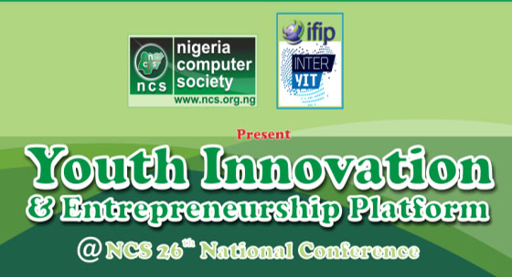
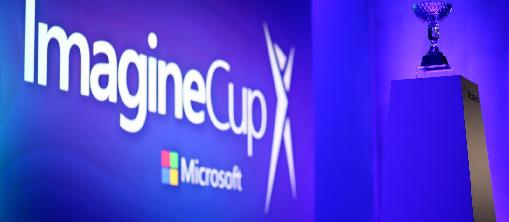

The Nigeria Computer Society (NCS)
The Nigeria Computer Society (NCS) in collaboration with FIIP International Young ICT Group presents Youth Innovation and Entrepreneurship Platform (YIEP) at the NCS 26th National Conference taking place as follows:
Date: Tuesday, July 19 to Thursday, July 21, 2016
Venue: NAF Conference Centre, Abuja, Nigeria.
Ajayi Crowther University
Ajayi Crowther University management approves and makes new decisions various policies to guide student exit from campus. Read more...

Ajayi Crowther Students outstanding debut at 2016 Imagine Cup!
Students of Computer Science from Ajayi Crowther University, Oyo comes proudly 3rd with the IDP Finder.
IDP Finder is a solution effective database for Internally Displaced People and victims of war and natural disasters.
Read more...